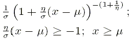

![[distributions0]](distributions0.bmp) Distributions
Distributions
Contents
Discrete Univariate
Bernoulli
Binomial
Categorical
Negative Binomial
Poisson
Continuous Univariate
Beta
Chi-squared
Double Exponential
Exponential
Gamma
Generalized Gamma
Log-normal
Logisitic
Normal
Pareto
Student-t
Uniform
Weibull
Discrete Multivariate
Multinomial
Continuous Multivariate
Dirichlet
Multivariate Normal
Multivariate Student-t
Wishart
Discrete Univariate [top]
Bernoulli
r ~ dbern (p)
![[distributions1]](distributions1.bmp)
Binomial
r ~ dbin(p, n)
![[distributions2]](distributions2.bmp)
Categorical
r ~ dcat(p[])
![[distributions3]](distributions3.bmp)
Negative Binomial
x ~ dnegbin(p, r)
![[distributions4]](distributions4.bmp)
Poisson
r ~ dpois(lambda)
![[distributions5]](distributions5.bmp)
Continuous Univariate [top]
Beta
p ~ dbeta(a, b)
![[distributions6]](distributions6.bmp)
Chi-squared
x ~ dchisqr(k)
![[distributions7]](distributions7.bmp)
Double Exponential
x ~ ddexp(mu, tau)
![[distributions8]](distributions8.bmp)
Exponential
x ~ dexp(lambda)
![[distributions9]](distributions9.bmp)
Gamma
x ~ dgamma(r, mu)
![[distributions10]](distributions10.bmp)
Generalized Gamma
x ~ gen.gamma(r, mu, beta)
Log-normal
x ~ dlnorm(mu, tau)
![[distributions12]](distributions12.bmp)
Logistic
x ~ dlogis(mu, tau) 
Normal
x ~ dnorm(mu, tau)
![[distributions14]](distributions14.bmp)
Pareto
x ~ dpar(alpha, c)
![[distributions15]](distributions15.bmp)
Student-t
x ~ dt(mu, tau, k)
![[distributions16]](distributions16.bmp)
Uniform
x ~ dunif(a, b)
![[distributions17]](distributions17.bmp)
Weibull
x ~ dweib(v, lambda)
![[distributions18]](distributions18.bmp)
Discrete Multivariate [top]
Multinomial
x[] ~ dmulti(p[], N)
![[distributions19]](distributions19.bmp)
Continuous Multivariate [top]
Dirichlet
p[] ~ ddirch(alpha[])
![[distributions20]](distributions20.bmp)
Multivariate Normal
x[] ~ dmnorm(mu[], T[,])
![[distributions21]](distributions21.bmp)
Multivariate Student-t
x[] ~ dmt(mu[], T[,], k)
![[distributions22]](distributions22.bmp)
Wishart
x[,] ~ dwish(R[,], k)
![[distributions23]](distributions23.bmp)